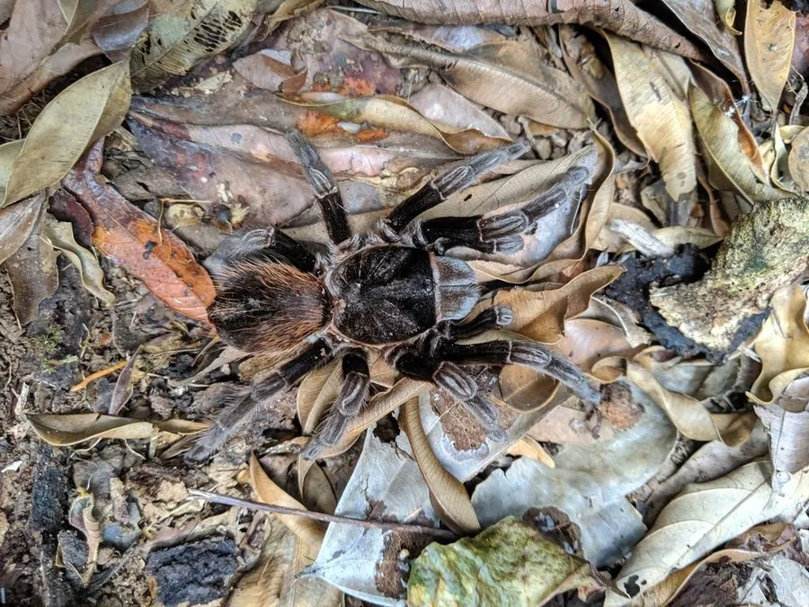

蛛形动物 · 动物界
墨西哥红尾捕鸟蛛 Brachypelma vagans

腹部覆鲜红色长毛的中大型捕鸟蛛，穴居于墨西哥至中美的干燥林地，受惊时踢落螫毛，被列入附录二。
- 分类
- 门节肢动物门纲蛛形纲目蜘蛛目科捕鸟蛛科属短尾蛛属
- 栖息环境
- 干燥落叶林、灌丛与草地中自掘的洞穴
- 地理分布
- 墨西哥南部至中美洲（伯利兹、危地马拉等地）
- 保护级别
- 列入《濒危野生动植物种国际贸易公约》附录二，野外捕捉受管制
物种志
墨西哥红尾捕鸟蛛的足展约十二至十五厘米，体色深黑，腹部密覆鲜红色的长毛，这是它最醒目的标志。头胸甲黑色，足粗壮，末端有浓密的爪垫，能在光滑表面攀爬。雌蛛体型更大，寿命可达二十年以上，雄蛛成熟后寿命仅一两年。它属于新大陆捕鸟蛛，腹部生有螫毛，遇险时用后足快速摩擦腹部，把刺毛踢向对手。
它分布于墨西哥南部至中美洲的干燥落叶林和灌丛，栖息在自己挖掘的洞穴中，洞口常铺有丝网，夜间出来捕食昆虫和小型脊椎动物。雌蛛产下的卵囊可含数百粒卵，孵化后的幼蛛会集群生活一段时间再分散。螫毛接触皮肤会引起红肿瘙痒，进入眼睛则可能损伤角膜，处理时应戴手套并避免揉眼。它被列入《濒危野生动植物种国际贸易公约》附录二，野外捕捉与栖息地开垦是主要威胁。
形态与习性
- 足展约十二至十五厘米
- 体色通体深黑，腹部覆鲜红色长毛
- 寿命雌蛛可达二十年以上，雄蛛仅一两年
- 防御用后足摩擦腹部，踢落螫毛
- 洞穴自掘洞穴，洞口铺丝网
- 保护国际公约附录二，贸易需许可
趣味知识
- 它腹部那层红毛是螫毛，被踢到皮肤上会又红又痒，揉进眼睛更麻烦。
- 雌蛛能活二十年，雄蛛成熟后只活一两年，寿命差距悬殊。
- 它被踢毛时后足摩擦腹部的动作极快，肉眼只能看到一团红雾。